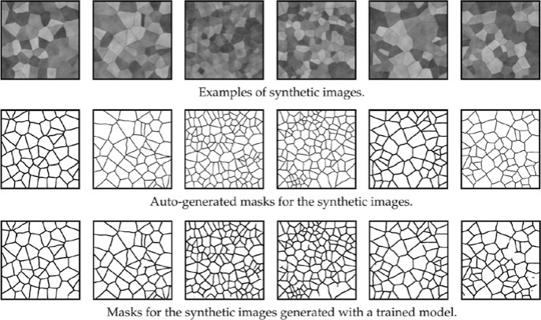

Machine Learning in Materials Processing & Characterization
Unit 6: Transfer Learning as Optimization
FAU Erlangen-Nürnberg


§1 · The Small-Data Challenge
01. From scratch is the exception
- Today’s question: what do we do when we have a \(10^9\)-parameter network and \(10^2\) labeled images?
- The honest answer in modern materials ML: we almost never train from scratch.
- We continue an optimization that someone else (often the ImageNet community) already did for us.
- Three levers do almost all the work:
- Augmentation — synthetic diversity from existing images.
- Transfer learning — reuse pretrained weights as a warm start.
- Synthetic data — generate labeled images from physics or geometry.
MFML Unit 6 prerequisite (this week): Optimization for Deep Learning.
- Loss landscapes, gradient descent, momentum.
- AdaGrad / RMSProp / Adam, per-parameter LR.
- Learning-rate schedules, warm-up, cosine annealing.
- Batch size \(\leftrightarrow\) gradient noise.
Everything in this lecture is a special case of those ideas applied to a pretrained starting point.
02. The “big data” myth in materials
- Modern detectors generate terabytes of raw data per session (4D-STEM, serial-section FIB-SEM, in-situ video).
- The labeled fraction is tiny: typically \(10^{-3}\)–\(10^{-5}\) of frames.
- ImageNet labels were crowdsourced via Mechanical Turk at $0.01 / image.
- Materials labels (a grain map, a defect mask) cost PhD-hours — $$30–60 min per SEM, often more for TEM.
- Numerical reality check. A ResNet-50 expects \(\sim 10^6\) labeled images. A typical alloy-segmentation paper has \(\sim 10^2\).
- That’s four orders of magnitude of data we don’t have.
- Closing this gap naïvely by collecting more data is impossible: the bottleneck is human expertise, not detector throughput.
- We must be smart with what we have.
03. Why materials data is scarce
Acquisition cost per labeled sample.
- Synchrotron beamtime: $10–50 k / day, allocated 6–12 months in advance.
- Aberration-corrected STEM: $1–5 k / day instrument cost.
- Sample preparation (FIB lamellae, electropolishing) takes hours.
- In situ experiments destroy the sample — you get one shot.
Expert annotation cost.
- Segmenting 100 grains in an SEM: ~1–2 hours.
- Identifying dislocation cores in HRTEM: minutes per image, ambiguous in 10–20 % of cases.
- Phase mapping in EBSD: requires Kikuchi-pattern-by-pattern review for ambiguous indexing.
- Inter-annotator agreement is often $<$90 % even between experts. (Sandfeld et al. 2024)
04. Labeled vs. raw data — the gap
- A typical 4D-STEM session produces \(\sim 10^7\) diffraction patterns.
- Of those, perhaps a few hundred have ever been hand-labeled.
- A typical SEM tomography stack: \(10^3\)–\(10^4\) slices, with maybe 10 slices fully segmented.
- The unlabeled background dominates by 3–5 orders of magnitude.
Implications for the ML pipeline.
- Use the unlabeled background: self-supervision, pretraining on raw pixels (foreshadows W11/W14).
- Reuse other people’s labels: ImageNet, Cityscapes, BraTS — all provide pretrained weights we can fine-tune.
- Manufacture labels: synthetic data with perfect masks (Part 5).
05. Overfitting in the small-data regime
- Train a ResNet-50 on 100 SEM images from one microscope.
- Training loss → 0 within a few epochs.
- Validation loss diverges; test on a different microscope drops 30–50 percentage points.
- The model memorized detector artifacts (drift bands, vignetting, fixed-pattern noise) instead of microstructural features.
Bias–variance picture (from MFML).
- High-capacity model + small dataset \(\Rightarrow\) high variance.
- Tiny perturbations of the training set move the optimum across the loss landscape by huge amounts.
- The same checkpoint, retrained with a different seed, gives a different test accuracy by 5–15 percentage points.
- This is not noise — this is what the bias–variance trade-off looks like in practice.
06. The strategy map
Three levers, one pipeline.
- Augmentation \(\to\) multiplies the labeled set by encoding invariances (rotations, flips, noise).
- Transfer learning \(\to\) reuses optimization done on a larger labeled set; warm start in a flat basin.
- Synthetic data \(\to\) manufactures labels for free using physics or geometry simulators.
Typical real-world combination:
[ImageNet pretrained backbone]
│ (transfer)
▼
[fine-tune on synthetic Voronoi]
│ (synthetic data)
▼
[fine-tune on 100 real SEMs]
│ (transfer + augmentation)
▼
deployable model- Augmentation is layered onto every fine-tuning stage.
- This pipeline is the ML-PC default, not an exotic recipe.
§2 · Fine-Tuning as Continued Optimization
07. From SGD to fine-tuning — the same machinery
Pretraining (Task A).
- Minimize \(\mathcal{L}_A(\boldsymbol{\theta}) = \mathbb{E}_{(x,y)\sim\mathcal{D}_A}\!\left[\ell(f_{\boldsymbol{\theta}}(x), y)\right]\) on a large dataset (e.g., ImageNet).
- Lots of data, lots of compute, lots of optimization steps.
- End point: \(\boldsymbol{\theta}^\star_A\) — a flat basin of \(\mathcal{L}_A\).
Fine-tuning (Task B).
- Minimize \(\mathcal{L}_B(\boldsymbol{\theta})\) on a small materials dataset starting from \(\boldsymbol{\theta}^\star_A\).
- Same SGD/Adam mechanics. Same loss-landscape ideas.
- Only the landscape and the initial point change.
The continuity claim.
\[\boldsymbol{\theta}_{t+1} = \boldsymbol{\theta}_t \;-\; \eta_t \, \mathbf{m}(\nabla \mathcal{L}_B(\boldsymbol{\theta}_t))\]
- Replace \(\mathcal{L}_A\) with \(\mathcal{L}_B\).
- Initialize at \(\boldsymbol{\theta}^\star_A\) instead of random.
- Done. That is fine-tuning.
The non-trivial part: \(\mathcal{L}_B\) is related to \(\mathcal{L}_A\) (both are image-classification-like losses), but its minimum is at a different point. Fine-tuning is the controlled walk from one minimum to the other.
08. The transfer-learning loss landscape
Pretraining lands you in a flat basin of \(\mathcal{L}_A\).
- Local Hessian \(\mathbf{H}_A = \nabla^2 \mathcal{L}_A(\boldsymbol{\theta}^\star_A)\) has small eigenvalues — flat minimum (good for generalization, MFML W6).
- Gradient noise during pretraining acts as an implicit regularizer toward flat minima.
Why the same point is good for \(\mathcal{L}_B\).
- For related tasks, \(\mathcal{L}_B\) is approximately a perturbation of \(\mathcal{L}_A\) near \(\boldsymbol{\theta}^\star_A\).
- Flat basins of \(\mathcal{L}_A\) are typically also low-loss regions of \(\mathcal{L}_B\) — features generalize.
Fine-tuning is a controlled walk in this landscape.
- We want to stay in the basin (preserve pretrained features).
- We want to descend on \(\mathcal{L}_B\) (fit the new task).
- These two goals trade off via the learning rate.
- Too large an LR \(\Rightarrow\) leave the basin \(\Rightarrow\) catastrophic forgetting (next slide).
- Too small an LR \(\Rightarrow\) never adapt \(\Rightarrow\) underfitting on Task B.
Mental model: fine-tuning = SGD with a really good prior on where the minimum is.
09. Catastrophic forgetting as an optimization issue
Symptom. Fine-tuning destroys generic features the model painstakingly learned during pretraining.
- 14 M-image-trained edge detectors \(\to\) broken in 1000 SGD steps with the wrong LR.
- Validation accuracy on Task A collapses; Task B accuracy plateaus at a low level too.
- The model is now worse than either pretrained or scratch-trained.
Mechanism. Optimization on a non-stationary loss.
- \(\mathcal{L}_B\) has a different minimum than \(\mathcal{L}_A\).
- Large LR + many steps \(\Rightarrow\) trajectory leaves the \(\mathcal{L}_A\)-basin.
- Once outside the basin, the pretrained features are no longer protected by curvature — they drift.
Cure (MFML W6 toolkit).
- Small LR on the backbone (don’t move far).
- Per-layer / per-parameter LR (next two slides).
- LR schedules with warm-up (slide 13).
- Gradual unfreezing (slide 31).
10. Discriminative learning rates (1/2)
The MFML W6 thread. Per-parameter LRs were the central idea of AdaGrad / RMSProp / Adam:
\[\boldsymbol{\theta}^{(i)}_{t+1} = \boldsymbol{\theta}^{(i)}_t - \frac{\eta}{\sqrt{v^{(i)}_t}+\varepsilon}\,g^{(i)}_t\]
- Different parameters get different effective step sizes.
- Adam’s \(v_t\) tracks the variance of past gradients per parameter.
Layer-wise LR is the coarsened version of the same idea.
- Group parameters by layer (or layer group).
- Hand-set LRs per group based on what we know about the role of each layer.
Three-group recipe (the standard).
| Group | Role | LR |
|---|---|---|
| Early backbone | Generic edges, blobs | \(10^{-5}\) |
| Late backbone | Mid-level textures | \(10^{-4}\) |
| Head (new) | Task-specific | \(10^{-3}\) |
Why the 10× steps? Backbone is almost right (small adjustments). Head is random (large adjustments needed). Mid layers interpolate.
Name to know. This is “discriminative fine-tuning” (howard2018ulmfit?), originally proposed for ULMFiT in NLP and now the default recipe for fine-tuning everywhere.
11. Discriminative learning rates (2/2) — implementation
PyTorch one-liner.
- Each
paramsgroup can have its own LR, weight decay, and even its own schedule.
Why this works pedagogically.
- Early-backbone features (Gabor-like edge detectors) are the same for cats, cars, and grain boundaries. Tiny LR keeps them in place.
- Late-backbone features (object parts) need some adaptation: a “wheel” detector becomes a “precipitate” detector with mild updates.
- Head is randomly initialized: it must travel a long distance in parameter space, so it gets the largest LR.
Optimization-theoretic sanity check. The total effective update is
\[\|\Delta\boldsymbol{\theta}\| \approx \eta \cdot \|\nabla \mathcal{L}_B\|\]
per step per group. Backbone step is \(10^{-2} \times\) head step.
12. Adam vs SGD+momentum for fine-tuning
Adam (the default first choice).
- Per-parameter adaptive LR \(\Rightarrow\) robust to small/noisy datasets.
- Fast convergence in the first ~10 epochs.
- Forgiving of misspecified base LR (the \(v_t\) term self-corrects).
Caveat (MFML W6). Adam tends to converge to sharper minima than SGD+momentum, which can cost generalization on small datasets.
SGD + momentum (for the final tightening).
- Slower convergence, but the noise structure prefers flatter minima.
- Better test-set performance, especially on small datasets (wilson2017marginal?).
Practical workflow.
- Phase 1 (10–30 epochs): AdamW, discriminative LRs, cosine schedule.
- Phase 2 (5–10 epochs): switch to SGD+momentum, smaller LR, no decay.
- Final checkpoint = best validation loss across both phases.
13. Warm-up and cosine schedules
The fine-tuning warm-up problem.
- The head is randomly initialized at step 0.
- Early gradients \(\nabla_\theta \mathcal{L}_B\) from the random head are huge and noisy.
- These large gradients backpropagate into the pretrained backbone.
- Result: the first few hundred steps can wreck pretraining.
Fix: linear warm-up.
\[\eta_t = \eta_\text{max} \cdot \min(1, t / T_\text{warm})\]
- Ramp LR from 0 to \(\eta_\text{max}\) over \(T_\text{warm} \approx 500\) steps.
- Gives the head time to “settle” before large updates reach the backbone.
Cosine annealing for the long tail.
\[\eta_t = \eta_\text{max} \cdot \tfrac{1}{2}\!\left(1 + \cos\!\frac{\pi t}{T}\right)\]
- Smoothly decays LR to (near) zero over \(T\) total steps.
- Final epochs run with very small LR \(\Rightarrow\) refine within the basin.
- Beats step-decay schedules empirically; matches MFML W6 derivation (geometric averaging of stochastic noise).
Combined schedule. Warm-up for first ~5 % of steps, cosine decay for the rest. This is the de-facto standard for fine-tuning.
14. Batch size and gradient noise revisited
MFML W6 result. The SGD update is
\[\boldsymbol{\theta}_{t+1} = \boldsymbol{\theta}_t - \eta \, \hat{g}_t\]
where \(\hat{g}_t\) is a stochastic gradient with variance \(\sigma^2 / B\) (B = batch size).
- Smaller batches \(\Rightarrow\) noisier gradients \(\Rightarrow\) implicit regularization toward flat minima.
- Larger batches \(\Rightarrow\) smoother gradients \(\Rightarrow\) converge to sharper minima (faster but generalize less).
Implications for fine-tuning.
- Small datasets \(\Rightarrow\) small batches anyway (memory + dataset size).
- Small batches help: they regularize the optimizer toward flat minima — exactly what we want to preserve pretrained features.
- Linear-scaling rule. If you halve the batch, halve the LR (and vice versa). Keeps the update size \(\eta \, \hat{g}\) comparable.
- For fine-tuning: \(B = 8\)–\(32\) is typical and often better than \(B = 256\).
15. From MFML optimization theory to the TL recipe
The five MFML W6 lessons, applied to TL.
- Warm start in a flat basin — pretraining (slide 8).
- Per-layer LR — discriminative fine-tuning (slides 10–11).
- Schedules + warm-up — preserve pretraining (slide 13).
- Adam → SGD+momentum — speed first, generalization last (slide 12).
- Small batches — implicit flat-minimum regularizer (slide 14).
Synthesis.
Fine-tuning is continued optimization in a related loss landscape, starting from a flat basin, using per-layer learning rates with warm-up and cosine annealing, transitioning from Adam to SGD+momentum for the final tightening.
- Every term in this sentence is a direct application of MFML W6.
- This recipe drives all of Parts 4–6.
- The rest of the lecture is applications of these five lessons.
§3 · Data Augmentation
16. Augmentation — artificially expanding the dataset
“Reusing existing images by applying transformations.” (Sandfeld et al. 2024)
- Each training image \(x\) becomes a family \(\{T_\alpha x : \alpha\}\).
- Network sees a much richer effective training set \(\tilde{\mathcal{D}} = \{(T_\alpha x_i, y_i) : i, \alpha\}\).
- The labels are unchanged if \(T_\alpha\) respects the task’s invariances.
Optimization view. Augmentation modifies the loss:
\[\mathcal{L}_\text{aug}(\boldsymbol{\theta}) = \mathbb{E}_{\alpha,(x,y)}\!\left[\ell(f_{\boldsymbol{\theta}}(T_\alpha x), y)\right]\]
- Smoother surface (averaging over \(\alpha\)).
- Implicit regularization toward \(T_\alpha\)-invariant predictors.
- Acts as a Bayesian prior: “the answer should not depend on \(T_\alpha\) when \(T_\alpha\) encodes a physical symmetry.”
17. Geometric transformations
Standard kit.
- Horizontal / vertical flips.
- 90° rotations (cheap; lossless on grid).
- Arbitrary-angle rotations (require resampling).
- Scaling / random resized crop.
- Random crops (standard for ResNet training).
- Affine warps, perspective warps.
For microstructures.
- “Up” is usually arbitrary \(\Rightarrow\) rotation invariance is physically natural.
- 90° rotations + flips are the safest default.
- Arbitrary-angle rotation works for isotropic materials; pad with reflection or wrap to avoid black corners.

Sample augmentations applied to a microstructure image. Each row shows different rotations and flips of the same input.
18. When transformations are “physically illegal”
The rule. \(T_\alpha\) must preserve the label.
Examples where rotation breaks the label:
- Textured materials with preferred orientation (rolled metals, drawn fibers, columnar grains).
- Imaging modalities with directional shadows (BSE detectors at oblique incidence, secondary-electron contrast).
- Crystallographic-orientation maps (rotating the image rotates the crystal frame, changing every Euler angle in the label).
Examples where flips break the label:
- Chiral structures (helical nanostructures — see (Liu et al. 2020)).
- Polarized-light micrographs (handedness matters).
- Electron-vortex / orbital-angular-momentum images.
Rule of thumb.
If your physics changes under \(T_\alpha\), don’t augment with \(T_\alpha\).
- Test for legality: ask a domain expert “would this rotated image still have the same label?”
19. Elastic transformations and cutout
Elastic deformations.
- Apply a smooth random displacement field \(\mathbf{u}(x,y)\) to the image.
- Simulates stage drift, scan distortion, mild sample strain.
- Standard in medical imaging (ronneberger2015unet?).
- Hyperparameters: displacement amplitude \(\alpha\), smoothness scale \(\sigma\).
Cutout / random erasing.
- Black out a random rectangle (or replace with mean intensity).
- Simulates occlusions, contamination, dead-pixel rectangles.
- Forces the network to use all spatial regions, not just one.
- Generalization of dropout to image space.
Both encode physics. Elastic = drift; cutout = detector defects / artifacts.
20. Intensity transformations
Standard intensity augmentations.
- Random brightness shift: \(x \to x + b\), \(b \sim U[-0.2, 0.2]\).
- Random contrast: \(x \to \mu + c(x - \mu)\), \(c \sim U[0.7, 1.3]\).
- Gamma correction: \(x \to x^\gamma\), \(\gamma \sim U[0.7, 1.3]\).
- Histogram equalization.
Why this matters in materials.
- Detector dynamic range varies by setup (gain, exposure, integration time).
- Sample preparation (polishing quality, etch time) shifts contrast levels.
- Cross-microscope deployment: the physics is the same but the intensity statistics differ.
Augmenting intensity makes the model microscope-agnostic — usually the single most useful augmentation for cross-instrument generalization.
21. Adding “physical” noise as augmentation
Physically-motivated noise types.
- Gaussian (\(\sigma\)): electronic / read noise.
- Poisson (\(\sqrt{N}\)): counting statistics, low-dose imaging.
- Gaussian blur (\(\sigma_\text{psf}\)): defocus, scan smearing.
- Salt-and-pepper: dead/hot pixels.
Match noise type to the expected detector physics (Unit 2 callbacks).
Why this works.
- At training time the network sees clean and noisy versions of the same image with the same label.
- It learns to identify structural motifs invariant to noise.
- Equivalent to a denoising auxiliary task implicitly built into the optimization.
Especially valuable for low-dose imaging (cryo-EM, beam-sensitive samples) where deployment noise is much higher than training noise.
22. Augmentation libraries — Albumentations / Torchvision
Albumentations recipe (typical).
- All operations are stochastic (probability
p). - Same
Composehandles image and mask consistently.
Torchvision v2 (newer, native PyTorch).
- Tightly integrated with PyTorch tensors and
torch.compile. - Fewer materials-specific transforms than Albumentations.
23. On-the-fly vs offline; the label-consistency rule
On-the-fly (the default).
- Augment inside the data loader; every batch sees fresh randomness.
- Maximum diversity, minimum disk space.
- Bottlenecks: CPU ↔︎ GPU transfer; complex transforms.
Offline (rarely needed).
- Pre-augment to disk; train on the static expanded set.
- Faster per-step (no compute at train time).
- Worse diversity (each augmented copy seen many times).
- Use when GPU is starved and CPU augmentation is the bottleneck.
Label-consistency rule (segmentation/detection).
Whatever transformation you apply to the image, you must apply identically to the mask / boxes / keypoints.
- Rotate image \(\Rightarrow\) rotate mask.
- Crop image \(\Rightarrow\) crop mask the same way.
- Brightness on image \(\Rightarrow\) no-op on mask (intensity, not geometry).
- Use library calls that take both:
aug(image=img, mask=mask).
- Forget this once and you have a silently-broken dataset.
24. Augmentation pitfalls and Part 3 summary
Pitfalls.
- Don’t augment the test set. Test must be deployment-realistic.
- Don’t let an image and its augmented copy span train/test. This is augmentation-induced leakage — common, silent, and inflates accuracy by 5–20 points (we revisit in §6).
- Don’t augment past physical legality. Rotation on rolled metals, flips on chiral structures, etc.
- Don’t break the noise model by adding the wrong noise type.
Section take-homes.
- Augmentation is a way to encode physical invariances as a prior.
- Always augment in fine-tuning (essentially free regularization).
- Match augmentations to the expected deployment distribution (cross-microscope, low-dose, etc.).
- Combine augmentation with TL — the two compound multiplicatively in data efficiency.
§4 · Transfer Learning
25. Concept — knowledge reuse
“Learning on peas to count lentils.” (Sandfeld et al. 2024)
- Train a model on Task A (lots of data) → reuse weights for Task B (little data).
- The hope: low-level features (edges, textures, blobs) are shared between A and B.
- The empirical fact: it works spectacularly well across natural images and many scientific imaging modalities.
Optimization view (§2 callback).
- Pretrained \(\boldsymbol{\theta}^\star_A\) sits in a flat basin of \(\mathcal{L}_A\).
- For related Task B, that basin is approximately a low-loss region of \(\mathcal{L}_B\).
- We start fine-tuning inside a good region — orders of magnitude less data needed than a cold start.
Quantitatively. ImageNet-pretrained ResNet on 100 medical/materials images typically beats scratch-trained ResNet on 10 000 images.
26. ImageNet pretraining and hierarchical features
ImageNet at a glance.
- 14 M images, 1000 classes (cats, cars, mushrooms…).
- Hundreds of GPU-years of optimization done by the community.
- Standard pretrained checkpoints (ResNet, ViT, ConvNeXt) downloadable from PyTorch / HuggingFace.
- None of the classes are grain boundaries — yet pretraining still helps. Why?
Hierarchical feature reuse.
- Early layers learn edges, blobs, color contrasts → universal.
- Middle layers learn parts (eyes, wheels, textures) → mostly reusable.
- Late layers learn class-specific concepts → throw away.
The trick: keep the universal early layers, replace the class-specific late ones.
- This decomposition is the basis for the backbone / head split.
27. Backbone and head
Backbone.
- The bulk of the network — feature extractor.
- ResNet-50 stages, ViT transformer blocks, U-Net encoder.
- Generic. Reusable across tasks.
Head.
- The final layer(s) — classifier or decoder.
- Typically: linear classifier (classification), \(1\times 1\) conv (segmentation), MLP (regression).
- Task-specific. Replaced for every new task.
The TL workflow in two lines.
- Backbone keeps pretrained weights.
- Head is randomly initialized for the new task.
- Then choose: feature-extraction or fine-tuning (next slides).
28. Strategy 1 — Feature extraction
Recipe.
- Load pretrained backbone + head.
- Replace head for new task.
- Freeze the backbone (
param.requires_grad = False). - Train only the head.
Implementation (PyTorch).
When to use it.
- Very small datasets (\(< 100\) labeled examples).
- Target task is very similar to pretraining.
- Limited compute / time budget.
- Need a quick baseline.
Optimization view (§2).
- Effective parameter count drops from \(\sim 25\) M (full ResNet) to \(\sim 2\) M (head only).
- Tiny parameter count \(\Rightarrow\) tiny dataset suffices to fit.
- Almost no overfitting risk.
29. Strategy 2 — Fine-tuning (full)
Recipe.
- Load pretrained backbone + new head.
- Unfreeze everything (or unfreeze gradually — slide 31).
- Apply the full §2 recipe:
- Discriminative LRs.
- Warm-up + cosine schedule.
- Adam → SGD+momentum switch.
- Small batches.
Result. Backbone adapts to the new domain.
When to use it.
- \(\gtrsim 100\) labeled examples (rule of thumb).
- Domain gap between pretraining and target task is significant.
- You can afford the longer training time.
Optimization view.
- Effective parameter count = full network (\(\sim 10^7\)–\(10^8\)).
- Discriminative LRs (slide 10) and small steps (slide 9) keep us in the pretrained basin.
- Outperforms feature extraction on essentially every materials task with \(\geq 100\) labels.
30. Layer-wise LRs in practice (recap of §2)
The fine-tuning LR menu (typical starting point for ResNet-50 + custom head):
| Layer group | LR (Adam) | LR (SGD+momentum) |
|---|---|---|
| Head (new) | \(10^{-3}\) | \(10^{-2}\) |
| Layer 4 | \(10^{-4}\) | \(10^{-3}\) |
| Layer 3 | \(10^{-4}\) | \(10^{-3}\) |
| Layer 2 | \(10^{-5}\) | \(10^{-4}\) |
| Layer 1 | \(10^{-5}\) | \(10^{-4}\) |
Why it works.
- Head was random — needs to traverse the loss landscape.
- Layer 4 (semantic) — moderate adjustment to materials concepts.
- Layers 1–2 (Gabor-like edges) — small adjustment if any.
Combine with §2 recipe.
- Warm-up over first 5 % of steps.
- Cosine annealing for the rest.
- Small batches (\(B = 16\)–\(32\)).
- Switch to SGD+momentum for the last 20 % of steps.
31. Gradual unfreezing
The procedure (ULMFiT-style).
- Freeze all but head; train head to convergence (\(\sim 5\) epochs).
- Unfreeze the last backbone block; train (\(\sim 5\) epochs).
- Unfreeze the second-to-last block; train.
- Continue until all layers are unfrozen.
- Optional: final fine-tuning with the full §2 recipe.
Why it works (optimization view).
- Each phase is a small-parameter optimization in a good basin.
- The head learns first — its gradients become well-conditioned before they reach the backbone.
- Avoids catastrophic forgetting at the architecture level, not just via small LRs.
When to use it. Very small datasets, large domain gap, or when plain fine-tuning is unstable.
32. Domain gap — natural vs scientific images
Where natural-image features do transfer.
- Edges, blobs, repetitive textures.
- Local statistics (Gabor-like first layer).
- Multi-scale composition.
- Most practical materials-imaging tasks (SEM, BSE, optical microscopy).
Where they don’t.
- 3D coordinates / point clouds (APT) — wrong topology.
- Diffraction patterns (4D-STEM) — totally different statistics.
- Hyperspectral cubes (\(x,y,E\)) — extra spectral axis.
- Ultra-low-dose images — natural images are noise-free; need Poisson-aware pretraining or noise-augmented fine-tuning.
Diagnostic. If feature extraction performs worse than scratch training, the pretrained features actively mislead — switch backbone or pretrain on a closer source domain.
33. Cross-microscope and within-domain transfer
A more friendly TL setup.
- Pretrain on a high-end aberration-corrected TEM dataset.
- Fine-tune on a lower-end, more accessible TEM.
- Both share the same physics; only acquisition parameters differ.
Why it usually works very well.
- Tiny domain gap \(\Rightarrow\) pretrained basin is essentially the target basin.
- Small fine-tuning datasets suffice.
- Often feature extraction is enough (no full fine-tuning needed).
Generalizes:
- Synchrotron \(\to\) lab X-ray.
- One alloy system \(\to\) a related alloy system.
- One operator’s images \(\to\) another operator’s images.
34. Success case — Au nanoparticles U-Net
Setup. (Sandfeld et al. 2024) §19.3.1
- Task. Segment crystalline gold nanoparticles from amorphous carbon background in TEM images.
- Data. \(\sim 50\)–\(100\) labeled TEM frames.
- Model. U-Net with ImageNet-pretrained encoder (ResNet-34 backbone); decoder trained from scratch.
- Recipe. Discriminative LRs, intensity augmentation, gradual unfreezing.
Outcome.
- High-fidelity segmentation despite very limited labels.
- Model handles low-contrast TEM frames where classical thresholding fails.
- Demonstrates the complete recipe: pretraining + augmentation + discriminative fine-tuning.
- This is the canonical materials-ML success story.

Predicted nanoparticle segmentation on a held-out TEM frame using the recipe described above.
§5 · Learning from Synthetic Data
35. The “infinite data” dream
- If we can simulate the microstructure, labels are free:
- Voronoi tessellation \(\to\) exact grain boundaries.
- Phase-field simulation \(\to\) exact phase masks.
- Diffraction simulation \(\to\) exact orientation maps.
- Generate as many examples as compute allows.
- No expert annotation required.
The catch. Synthetic data is too clean.
- No detector noise, no PSF blur, no scan distortions.
- A network trained only on synthetic learns to rely on artifact-free features that don’t exist in real images.
- Test on real data \(\to\) failure.
- Closing this sim-to-real gap is the technical challenge.
36. Voronoi tessellations for grain microstructures
The recipe. (Sandfeld et al. 2024) §19.3.2
- Drop \(N\) random seed points in a 2D box.
- Each pixel is assigned to the nearest seed (Voronoi cell).
- The cell boundaries are exact grain boundaries.
- Optionally: relax seed positions (Lloyd’s algorithm) for more regular grains.
Knobs.
- Number of seeds \(N\) \(\to\) grain size distribution.
- Seed-placement model (random / blue-noise / clustered) \(\to\) texture.
- Boundary thickness, smoothing \(\to\) visual realism.
- Anisotropy weights \(\to\) elongated grains (rolled metals).
- Generate millions of unique microstructures in seconds; perfect masks for free.

Synthetic polycrystalline microstructure generated by Voronoi tessellation, with the corresponding ground-truth grain-boundary mask.
37. From geometry to image — the synthetic ladder
Step 1: clean geometry. Voronoi mask, binary boundaries.
Step 2: add texture. Per-grain intensity (random or orientation-dependent).
Step 3: add PSF blur. Gaussian blur with realistic \(\sigma_\text{psf}\).
Step 4: add noise. Poisson + Gaussian per detector model.
Step 5: add artifacts. Scan distortions, charging, gradients.
Each step closes a piece of the sim-to-real gap.
- Step 1 alone \(\to\) network learns to detect “perfect line on uniform background”; fails completely on real SEM.
- Through step 4 \(\to\) network learns to detect “blurred edges in noisy textured field”; works on most real SEM.
- Step 5 (artifact simulation) \(\to\) robustness to specific instrument quirks.
38. The Sim-to-Real gap
The phenomenon.
- Network trained on synthetic alone: 95 % validation IoU on synthetic.
- Same network on real images: 30–50 % IoU.
- The network learned features that are only present in synthetic.
Why it happens (optimization view).
- The synthetic loss surface \(\mathcal{L}_\text{syn}\) has minima at feature configurations that detect synthetic-specific artifacts.
- The real loss surface \(\mathcal{L}_\text{real}\) has minima elsewhere.
- A model perfectly fit to \(\mathcal{L}_\text{syn}\) is not even close to a minimum of \(\mathcal{L}_\text{real}\).
Closing the gap is two ML problems — better simulation, or domain adaptation (next slide).
39. Domain adaptation
Strategy A: Make synthetic look real.
- Style transfer from real images onto synthetic (CycleGAN).
- Diffusion models conditioned on synthetic masks.
- Caveat: the generator must not change the labels.
Strategy B: Domain randomization.
- Vary synthesis parameters (noise, blur, contrast) aggressively.
- The model is forced to learn distribution-invariant features.
- Simpler than GANs; often equally effective.
Strategy C: Fine-tune on real.
- Pretrain on synthetic, fine-tune on a small real labeled set.
- Combines synthetic pretraining (rich feature learning) with real fine-tuning (closes the sim-to-real gap).
- Apply the full §2 fine-tuning recipe.
The pragmatic recommendation: Combine B (random synthesis) + C (real fine-tuning). Skip A unless you have GAN expertise.
40. Case study — SEM grain segmentation on Voronoi
Setup. (Sandfeld et al. 2024) Fig 19.11
- Training. Voronoi-synthetic grain images + perfect masks. Augmentation: noise, blur, intensity jitter.
- Architecture. U-Net (ImageNet-pretrained encoder + scratch decoder).
- Deployment. Real polycrystalline SEM images (never seen in training).
- Goal. Predict grain-boundary masks on real data.
Outcome.
- Network trained only on synthetic generalizes to real SEMs.
- Captures the topology of grain networks (closed cells, triple junctions, no dangling boundaries).
- Far more accurate than classical edge detection (Canny, watershed), which is fooled by texture and noise.
Take-home. With careful augmentation, the synthetic→real transfer is real. No real labels were used.

Real SEM image (left) and predicted grain-boundary mask (right) from a U-Net trained only on Voronoi synthetic data. The model captures the closed-cell topology characteristic of polycrystalline metals.
41. Procedural generation beyond grains
Other domains where synthetic data shines.
- Spectra (XRD, EELS, EDXS): simulate peak positions, widths, Lorentzian/Voigt shapes, backgrounds. Train denoising and peak- identification networks.
- Diffraction patterns (4D-STEM): simulate Bragg disks for known crystal orientations. Train orientation-mapping networks.
- 3D microstructures: phase-field or Monte Carlo Potts simulations. Train 3D-segmentation networks.
- Defect statistics: generate dislocations, precipitates with controlled densities. Train defect-classification networks.
Across all of these, the recipe is the same:
- Simulator generates labeled examples.
- Augment to close sim-to-real gap.
- Fine-tune on a small real labeled set.
42. Synthetic-data summary
Take-homes.
- Synthetic data closes the labeling gap but opens a sim-to-real gap.
- Both gaps must be addressed: aggressive augmentation + (ideally) small real fine-tuning set.
- Domain randomization (vary synthesis parameters widely) is the cheapest, most effective sim-to-real tool.
- Cascade pretraining (ImageNet \(\to\) synthetic \(\to\) real) is the state-of-the-art workflow.
Optimization view (§2 callback).
- Synthetic pretraining lands you in a basin closer to the materials target than ImageNet alone.
- Real fine-tuning is then a small final adjustment.
- The same MFML W6 recipe applies at each stage:
- Per-layer LRs, warm-up, cosine, Adam→SGD switch.
- Synthetic data is just another pretraining source.
§6 · Practical Workflow & Best Practices
43. The fine-tuning recipe — the canonical workflow
Steps.
- Pick a pretrained backbone (ResNet-50 / ConvNeXt / ViT-B).
- Replace the head for your number of classes / output channels.
- Freeze backbone; train head with Adam, LR \(\sim 10^{-3}\).
- Unfreeze with discriminative LRs + warm-up + cosine schedule.
- Switch to SGD+momentum for the last \(\sim 20\%\) of steps.
- Augment throughout (geometric + intensity + noise).
- Validate with grouped K-fold; held-out test on a different sample.
Map back to MFML W6.
| Step | MFML W6 idea |
|---|---|
| 1, 3 | Warm start in flat basin |
| 4 | Per-parameter LR + schedule + warm-up |
| 5 | Adam → SGD+momentum (flat minima) |
| 6 | Effective dataset size + invariances |
| 7 | Generalization measurement |
- Every step of this recipe is a direct application of MFML W6.
- The recipe is the deliverable of this unit.
44. Validation in the small-data regime
The problem. With \(N=100\) images:
- A single 80/20 train/test split gives \(\sim 20\) test images.
- Standard error on accuracy is \(\pm 5\)–\(10\) percentage points.
- One run is not enough to claim a result.
The solution: K-fold cross-validation (Unit 3 callback).
- Split data into \(K\) folds; train \(K\) models, each holding one fold.
- Average across folds; report mean ± stddev.
- Standard \(K = 5\); for very small data \(K\) up to \(N\) (LOOCV).
- Mandatory for any small-data result. A single train/val/test split is a publication risk.
45. Group-based splitting — the leakage you don’t see
The trap.
- \(N=100\) images, but only \(5\) specimens.
- Random 80/20 split: each specimen contributes some images to train and some to test.
- The “test” measures within-specimen generalization, not cross- specimen generalization.
- Apparent test accuracy is vastly inflated.
The fix: group by specimen.
- 5 specimens, 5-fold CV: each specimen is the test in exactly one fold.
- Each fold trains on 4 specimens, tests on 1.
- Measures real cross-specimen generalization.
The bigger principle.
Whatever varies in deployment, must vary across train/test in your validation.
- Specimen, microscope, operator, day, batch — split the relevant axis.
46. Active learning — bonus concept
The idea.
- You can label some images, but not all.
- Which images should you label?
- Active learning: label the images where the current model is least confident.
Why this works.
- Confident predictions teach the model little (already correct).
- Uncertain predictions are at the decision boundary — labeling them carries the most information.
- Maximizes the value per expert-hour.
Foreshadowing. Full treatment in W11 (automation) and W14 (Bayesian experiment design). Today: just know it exists and is the smart way to allocate your labeling budget.
47. The gold-standard test set
The principle.
A small, never-augmented, never-touched test set is non-negotiable.
- Reserve \(10\)–\(20\) examples on a different specimen / microscope / day.
- Lock them away. Touch them only at the end.
- Never use them for hyperparameter tuning.
Why this matters.
- The K-fold validation tells you about one slice of the distribution.
- The gold-standard test is your external check.
- Iterating on the validation set \(\Rightarrow\) overfit the validation set.
- The gold-standard test catches that overfitting.
- If you check the gold-standard test more than once, it stops being a gold-standard test.
48. When to stop — early stopping
The mechanic.
- Track validation loss every epoch.
- If validation loss has not improved for \(P\) epochs (patience), stop.
- Restore the best validation checkpoint.
Why early stopping is essential for fine-tuning.
- Small datasets are prone to late-stage overfitting: validation loss starts climbing while train loss keeps falling.
- Without early stopping, the final epoch’s checkpoint is overfit and worse than an earlier one.
Combine with cosine schedule. Cosine reduces LR toward zero, so by the end of training, gradient steps are small and overfitting is gentle. But early stopping is still cheap insurance.
49. Top takeaways
- Fine-tuning is continued optimization. Every MFML W6 lesson applies — flat basins, per-layer LRs, schedules, batch noise.
- Augment to encode physical invariances. Don’t break physics. Don’t leak.
- Transfer from large-scale pretraining (ImageNet) and / or synthetic data. Cascade is best.
- Synthetic data closes the labeling gap; aggressive augmentation closes the sim-to-real gap.
- Validate with grouped K-fold + a true gold-standard test on a different specimen / microscope.
- The recipe is the deliverable: backbone choice → head replace → freeze/unfreeze with discriminative LRs → warm-up + cosine → Adam→SGD switch → augment → group K-fold.
50. References & further reading
Course textbooks.
- (Sandfeld et al. 2024), Ch. 19 — transfer learning, augmentation, synthetic data; Au-nanoparticle U-Net (§19.3.1) and Voronoi grain segmentation (§19.3.2).
- (McClarren 2021), Ch. 6 — CNNs and large datasets, with practical examples.
- (Neuer et al. 2024) — physics-informed and explainable methods for engineering.
- (Goodfellow et al. 2016) — Ch. 8 (Optimization for Training Deep Models) is the textbook reference for §2.
Pelz-group materials-ML application examples.
- (Pelz et al. 2023) — ptychographic atomic-resolution tomography (data driving fine-tuning workflows).
- (Romanov et al. 2024), (You et al. 2024) — multi-slice ptychographic tomography; example of simulation-trained inverse models.
- (Peng et al. 2022) — complementary microscopy + ML for MOLs.
Foundational references. (howard2018ulmfit?) ULMFiT — discriminative fine-tuning; (loshchilov2017sgdr?) SGDR — warm restarts and cosine annealing; (smith2017cyclical?) — LR-finder; (wilson2017marginal?) — marginal value of adaptive methods; (goyal2017accurate?) — linear-scaling rule; (tobin2017domain?) — domain randomization; (kumar2022finetuning?) — fine-tuning vs. linear probing; (yosinski2014transferable?) — how transferable are features in deep neural networks.
MFML cross-reference. Unit 6 of the MFML course (this same week) covers loss landscapes, SGD/Adam, learning-rate schedules, and the batch–noise trade-off. Every practical recipe in this lecture is a direct application of that material.
References

© Philipp Pelz - Machine Learning in Materials Processing & Characterization